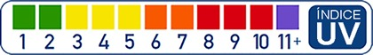

CONTÁCTANOS
CONTÁCTANOS
CONTÁCTANOS
CONTÁCTANOS
La escala del índice UV que se utiliza en Estados Unidos se ajusta a las pautas internacionales para el informe de mediciones ultravioleta (UVI) establecidas por la Organización Mundial de la Salud. (En inglés.) Aprenda cómo leer la escala del índice UV para ayudarle a evitar una exposición perjudicial a la radiación UV. Aquí puede descargar la aplicación móvil de la EPA sobre el índice UV e informarse sobre las medidas que puede tomar para protegerse del sol.
Una lectura de índice UV del 0 al 2 significa bajo peligro de los rayos UV del sol para una persona promedio.
Una lectura de índice UV de 3 a 5 significa un riesgo moderado de daño por exposición al sol sin protección.
Una lectura de índice UV de 6 a 7 significa un riesgo alto de daño por exposición al sol sin protección. Es necesario protegerse la piel y los ojos para que no sufran daños.
Una lectura de índice UV de 8 a 10 significa un riesgo muy alto de daño por exposición al sol sin protección. Tome precauciones adicionales porque la piel y los ojos sin protección resultarán dañados y pueden quemarse rápidamente.
Una lectura de índice UV de 11 o más significa un riesgo extremo de daño por exposición al sol sin protección. Tome todas las precauciones porque la piel y los ojos sin protección pueden quemarse en minutos.
Una forma fácil de saber cuánta exposición a la radiación UV está recibiendo es mirar su sombra: